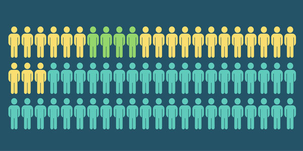
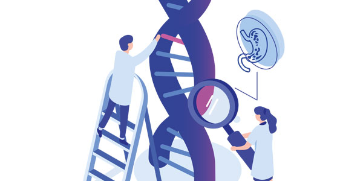
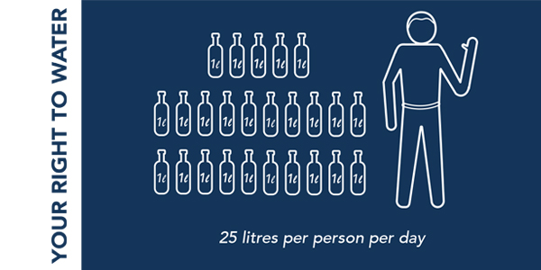
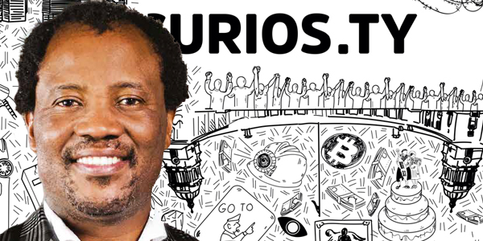

Curiosity 14: #Wits100
Curiosity, October 2022: In this special issue to mark Wits University’s centenary year, we look back over a 100 years during which our researchers have undoubtedly changed the world for good. We also look to the next 100 years and to a new generation of early career researchers in Africa who are taking on a myriad of complex planetary problems, including global change and inequality, erratic energy supply, the lack of governance and ethics, the threat of communicable and non-communicable diseases and pandemics, and the yet unknown challenges in the new century. #WitsForGood
In this issue:
- Meet the science superheroes whose research has saved countless lives (page 10): Five Wits scientists weigh in on the University’s proud legacy of public health activism and why standing up for social justice in an unequal world remains their fight.
- Mapping African genetic diversity for better health (page 14): The contribution of the Sydney Brenner Institute for Molecular Bioscience to the field of human genomics is rewriting history on the African continent.
- Thirty years of the lab in the bush (page 18): Agincourt in Mpumalanga is one of the longest-running research centres of its kind in sub-Saharan Africa with sophisticated infrastructure to track and understand health and wellbeing over the life course.
- Wits Digital Dome to light up the sky (page 32): It is the end of an era for the Wits Planetarium, although reimagining it as a Digital Dome promises to be literally out of this world.
- Facing climate change head-on (page 34): Climate change took nearly a century to become mainstream science. Wits is taking the lead in facing up to the challenge.
Archive
Curios.ty 14 (#Wits100): A century of doing good
Wits' research magazine celebrates 100 years of changing the world for good.
100 Years of changing the world. For Good
Guest Editorial: Wits remains a beacon of hope in society. We continue to strive for excellence in all that we do and use our knowledge for the good of society.
Stay curious – there’s a whole new world coming in 2122
Editorial: The stories in Curios.ty 14: #Wits100 showcase the University’s sustained participation, influence and impact in the lab, the classroom, and society.
How higher education can help heal us all
“We live in the most unequal country in the world. We can help bridge the divide and we don’t have any time to waste.” – Dr Judy Dlamini.
Academic and science activism saves lives
Meet the Wits’ science superheroes whose research has saved lives.
Mapping African genetic diversity for better health
The contribution of the Sydney Brenner Institute for Molecular Bioscience to the field of human genomics is rewriting history on the African continent.
Death makes us alive
Without death, there would be no life – this might sound like ancient mysticism, but Wits scientists are proving it.
Thirty years of the lab in the bush
Agincourt, one of the longest-running research centres of its kind in sub-Saharan Africa, tracks health and wellbeing over the life course.
The politics of protest
Protests are a hallmark of Wits’ history and have contributed to the University’s legacy of social activism, democracy and constitutionality.
Wits at a time of national crisis: Then and now
South African universities should revisit their multiple publics and explore what a public university in southern Africa today should be.
Telling African stories through art
The Wits Art Museum covers 3 000 m2, housing more than 12 000 artworks, of which 5 551 comprise the Standard Bank African Art Collection.
The evolution of science and research practice
How has science and research practice at Wits has evolved over a century?
The Wits Digital Dome to light up the sky
It’s the end of an era as Wits Planetarium is reimagined as a ‘out of this world’ digital dome.
Facing climate change head-on
Climate change took nearly a century to become mainstream science. Wits is taking the lead in facing up to the challenge.
Digging for the truth of humanity
Wits researchers have over the past century changed, and challenged, the way we think about the evolution of humanity and our ancestors.
Navigating life through the eyes of a gogga
Curiosity about dung beetles could lead us into our future.

Research by the books
Books based on research by Wits authors create a rare recording of history that tracks changes over time.
Identifying faces to recognise humanity
The development of the Wits Face Database: An African database of high-resolution facial photographs.
Business for good
Wits is exploring the opportunities created by social enterprises that focus on addressing local, regional and global challenges.
Beyond the Ivory Tower
Four Wits units demonstrate how translational research can respond to the needs of a world outside the academy.

The best job in the world
Column: Telling the stories of Wits’ research and academics might hopefully light a fire in the mind of the world’s next Einstein.
A philosophy for good. A University for good
There is something significantly common in the way in which all good things are good.
It’s complicated … but let’s talk about #Gender
Read the 13th issue of Curios.ty, themed: #Gender. We feature research across the gender spectrum that aims to ensure a more equitable and tolerant society.
To live and love across a spectrum
EDITORIAL: The way we choose to identify ourselves provokes questions and demands interrogation to ensure a more equitable and tolerant society.
STEM - not all are equal
Structures need to be put in place at higher education institutions to give women their rightful opportunities.
Beyond the binary
The gender binary has reached its expiry date but it still hasn’t been consigned to society’s dustbin.

The politics of a woman’s body
The backsliding of women’s rights happening right now should be the clarion call that gender rights are still everybody’s business.
The knife between her thighs
Female Genital Mutilation - South African researchers and medical practitioners are increasingly seeing it in its most extreme forms.
Finding Nemo’s sexual identity
As a species, we are only starting to scratch the surface of our understanding of gender, sex, and identity.
Levelling the playing fields
The competitive sporting world is playing catch-up with the realities of gender in modern society.
A woman’s work is never done
The work that women do in households is largely overlooked, yet it is critical for a well-functioning society.
Parenting in the city
Building cities for women will make them more inclusive for all groups.
Older people do bonk
The notion that people older than 50 neither desire nor engage in sexual intercourse is a misnomer that demands further research, particularly in Africa.
Monetising Pride
Responsibility and representation: Where does the buck stop for brands and business sales targeting the LGBTQIA+ community?
Fractured histories
Coloured women find their centre beyond the whisper and gossip.

Being queer in Africa
Despite a history of openness to queerness in pre-colonial times, Africa is now largely unwelcoming to LGBTQIA+ people.

Same-sexuality past and present
The notion that homosexuality is ‘unAfrican’ is totally false. People have engaged in same-sex relationships for centuries.
An illegal failure of our criminal justice system
Hate crimes such as the so-called “corrective rape” of lesbians and trans women is a black mark against SA’s constitutional democracy.
A heart for the queer and gay
Dr Ahmed Badat spends his life focusing on improving LGBTQIA+ mental health training for medical students.
Let’s talk about sex (and health), please
Changes in sexual functioning are a side effect of many physical and mental illnesses, however, across genders, sexual health and behaviour are not addressed.
Mobilising big data and AI to fight GBVF
Gender-based violence and femicide is a pandemic more insidious and endemic than a virus – how technology can help combat and prevent it.
Monstrous males/femme fatales
Gender portrayals in animated films have come a long way, which is important, as animation can be a tool for positive social change.

'Real' men lift others up and don't put them down
Men cannot be left on the periphery of conversations about gender-based violence and abuse.
Performing masculinity in Men’s Res
Q&A with Moeketsi Gordon Koahela on his research into masculinity and male university students.
Philanthropy’s feminist future
Could a growing understanding of the role of women in African philanthropy spark the evolution of the charitable giving sector?
Towards gender parity in academic leadership
Eight female fellows of the Female Academic Leadership (FALF) Programme at Wits share their experiences of breaking the glass ceiling.

We’re not your victims
COLUMN: Srila Roy says that feminists in the Global South are fighting the battle on two fronts, making a history of their own.

SA’s first black female doctor was a Witsie
When apartheid became law in 1948, a black woman from Limpopo had already achieved a series of firsts …
Curios.ty 12 (#Solutions): Advancing society for good
Our cutting-edge research offers #Solutions to some of the most challenging problems facing society today.
Wits.For Good. solutions inspire hope
Editorial: From solutions to the structural, political, and socioeconomic challenges in South Africa, to those ‘moonshot moments’ that advance society for good.

Reinventing higher education
We need to rethink higher education by asking what kind of society we want to create.

No place for politics in bricks and mortar
South Africa’s infrastructure seems to be falling apart at the seams. What needs to be done to save the country from further deterioration?

Building a better city
A ‘world class African City’ begins and ends with history and geography.

Pay the taxman his dues
A wealth tax could make a significant contribution to alleviating South Africa’s ailing fiscal situation.

What adds up when teaching maths?
To help close the maths gap in South Africa, Wits experts believe the focus should lie on the teacher.

Getting serious about gaming
Games from the Game Design programme at the Wits School of Digital Arts tell important stories, and allow for solutions to many real-world problems.

Zoom in. Team up. The new era of therapy
Can online platforms help therapists and tutors transform teaching and care beyond the pandemic?

Love in the boardroom
Can love be the central guiding value in big business and in complex decisions?

Mathematics solutions to boost tourism numbers
Numbers in tourism translate into revenue for the sector. Mathematicians are now number-crunching creatively to solve tourism challenges.

Photographing ghosts in space
Photographing a black hole in space, 55 million light years from Earth, seems an impossible task but scientists went to unprecedented lengths to achieve this.

How the brain solves problems
The connections among areas of our brain and how they interact is what counts when trying to find solutions to problems.

Think big to heal South African society
The ructions caused by the pandemic are an opportunity to reconsider core values and spending priorities to address our social ills.

Sense and sensuality in people with disabilities
Wits researchers are creating the space and support for people with disabilities to talk about sex.

Enabling engagement
Breaking down the perceptual barriers between students and people living with disabilities.

Engineering empathy
In search of ways to help his father recover from injuries suffered in a motorbike accident, Nabeel Vandayar enrolled at Wits to study medicine.

Healing South Africa’s public health headache
Academia binds the public and private healthcare sectors in the move towards universal healthcare .

Another brick in the pay wall
The media industry in South Africa has been sputtering along for several years. How do we prevent it from totally collapsing?

Social media regulation: Can we trust the tech giants?
Some scholars consider these ‘liberating technologies’ because they empower citizens to speak back to power and hold leaders accountable.
What the world needs now
As the world looks to COP26 in Glasgow, Scotland in 2021, it’s clear that the time for sitting on the side-lines is over.

Repurposing drugs to treat dangerous diseases
In drug repurposing new uses are identified for a drug outside of its original scope of indication, resulting in more effective treatment.
Can philanthropy grow Africa?
Despite the fact the philanthropy is pervasive – benefactors and beneficiaries abound – relatively little is known about its practice in an African context.

Make South Africa great again!
Column: We don’t just have the ability to turn South Africa around, we have a responsibility to do so.

Weekend theatrics so the show could go on
The solution was to convert the school hall of the McAuley House convent, The Nunnery, into a theatre – over one weekend.
Curios.ty 11 (#Viral): Covid-19 - An opportunity for a global reset
The pandemic demands a relook of how we connect with each other and the world.
How Covid-19 enabled a reset in the world
Editorial: The Covid-19 pandemic has gone viral and has severely impacted on how we interact, conduct our business, teach and learn.
How national identity affects infection outcome
Could a country’s collective psychology determine the outcomes of a pandemic? A global cohort of researchers believes so.
CTRL-ALT-DELETE: Re-setting the post-pandemic South Africa
The Covid-19 lockdown has had a massive impact on South Africa’s economy, exposing profound weaknesses such as the country’s huge inequality.
How vaccines save lives
The story of how vaccines save lives is important to tell – now more than ever.
Second wave severity: What semi-saved South Africa?
South Africa has surprised itself and the world with fewer Covid-19 deaths despite a significantly higher infection rate as predicted.
The long haul to partial recovery
So-called Covid long-haulers afflicted with 'Long Covid' are showing how long and frustrating the journey to recovery can be.

Making sense of the numbers
Modelling pandemics might be an imperfect science, but it is the best that we have.
Pandemic history foretells a dismal future
If history has taught the world anything, it’s to ignore the warning signs and carry on catching diseases.
When the US sneezes...
Different nations’ responses to the pandemic should serve as a warning to exercise extreme caution in choosing leaders.
Virus wages war on women
Almost everyone has suffered in some way from the effects of the Covid pandemic – but women have suffered far more.
Understanding the infodemic
Covid-19 misinformation, mythology, and fake news has implications for public health.
Valour and the virus
Throughout her career, Professor Glenda Gray has focussed on one thing only – saving lives.

Teaching in a Covid global village
It takes a village to raise a child but the global village is shrinking.

A fleeting green moment in time
Scientists predict that an Age of Pandemics is imminent unless human beings change their ways.
The blame game: Putting a pandemic on the pangolin
Is blaming a threatened species for a global pandemic not an indictment of our environmental conscience?
What we caught online
We need new rules of engagement on social media – even if we don’t know it yet.

Privacy and the dollars in you data
The balance between sharing personal data online and how it’s used and by whom is difficult to define and complex to regulate.
Infection online
Online attacks and phishing surged during Covid-19. Is there a permanent solution to cybercrime?
TikTok/WeChat: US and them
Banning popular apps like TikTok and WeChat is about more than a spat between the US and China.
Big data: A sword to wield or a knife in the back?
Competition policy will determine if big data is a tool for inclusion or exclusion.
Keeping an eye on the virus from the sky
Profile: When Covid-19 hit, 21-year-old Wits engineering student, Xolani Radebe, knew that he wanted to be part of the solution.
Beating the pandemic through innovative thinking
Three Wits postgraduate students demonstrate how their research and innovative ideas contribute to addressing a pandemic.
Finding security in the unseen
Messages carried in structured light can secure quantum communications in the future.
Dimming the lights on malaria
The fight against the disease that kills hundreds of thousands of people in Africa each year could be as simple as changing a light bulb.
Along came a virus…
Column: Professor Lynn Morris reflects on a lifetime of virus hunting, from HIV, through Ebola, to SARS-COV-2.
In the company of criminals
Column: Using the Covid-19 National State of Disaster to try to govern booze and cigarettes, is the wrong approach.

The making of a hospital
How the Wayside Inn became the Chris Hani Baragwanath Hospital.
Curios.ty 10, #Mood, explores mental health now and in the next decade
By 2030, mental health will be the single largest global challenge we will face (World Health Organization).
How are you really doing? #MOOD
Life as we know it has changed due to the coronavirus disease (Covid-19) which has irrevocably altered the way we live, work, behave, think and feel.
A moment in time
Wits postgraduate students in Medical Anthropology share the effects of living under lockdown amidst the global Covid-19 pandemic.
Is South Africa driving us mad?
We live in a state of constant high alert in South Africa. The effect on us is profound but an environment like this also builds resilience.

Putting a number on mental health costs
Mental health costs should be counted in people, not rands and cents.

Mental gymnastics
What’s the best thing you can do for your brain today? Move!
Save you sanity with sleep
Lack of sleep can wreak havoc on your physical health and mental wellbeing – and may have implications for people living with HIV.
The comfort of the Arts
The arts evoke emotion. How do we harness them for wellbeing?
Rock on!
Music is thought to be one of the ways that our ancient ancestors expressed their emotions – and may well have led to early languages.
Can tech save our sanity?
Promising technological and online innovations could be crucial in combating the world’s alarming mental health statistics.
Teaming-up at home
Our dependence on technology brought on by Covid-19 makes cognitive and emotional demands that, unaddressed, threaten our mental wellbeing.

Over ruled – How the head trumps the heart
Our brain is a complex organ – it keeps us breathing, helps us pull our hands from a fire, and keeps our emotions, fears and dreams in check.
The Crocodile Rock
Pay close attention the next time you play a Bach concerto to your pet crocodile. If you look closely, you might just see him tapping his toes to the rhythm.
Traditional answers to mind-body-spirit questions
Indigenous knowledge is critical in helping people cope with mental health issues that western medicine may not address.
How your tribe affects your vibe
We are influenced by those with whom we most closely associate, in terms of our ideologies, political positions and prejudices. Covid-19 exposed who we are.
Madness, she wrote
The feminisation of madness is persistent and pervasive as are forms of Othering across societies.
Feelings about fathers
The role of the father in the family or, more specifically, his absence, has profound implications for the mental wellbeing of his offspring.
Balancing two worlds
PROFILE: Nothing is more empowering than the feeling like you are being heard. Dr Nomfundo Moroe lends an ear and empathy to the Deaf community.
Whiter workplace wellness?
Mental health is set to become a global crisis by 2030. Creating a caring, nurturing culture in your workplace can save employers and employees a lot of stress.

Our ageing brains: Concentrating on dementia
Strong social networks can go a long way to assist people living with forms of dementia, such as Alzheimer's.
Understanding suicide
Suicide risk may start in the womb and studies also connect it to factors including smoking, social media and social inequality.

Concentrating on ADHD
Attention Deficit Hyperactivity Disorder (ADHD) is a long phrase to describe a short attention span. In students, ADHD can severely impact academic performance.

The right to die
Q&A: Professor of Philosophy, Kevin Behrens explains why euthanasia is not simply a matter of life and death.

Building a better understanding of disability
People with disabilities, be they physical or mental, are often treated differently, which may affect their mental wellness. How to remove the social barriers.
Facing feelings that fuel power relations
Critical Diversity Studies scholar, Adanma Yisa, explains why automated emotional responses shield us from confronting criticism can undermine reconciliation.
Lockdown blues
COLUMN: Every lockdown has a silver lining, Schalk Mouton discovers as he roller-coasters through the emotional demands of living in isolation.
History has no end
Former student leader and now Professor of Law, Firoz Cachalia, reflects on the mood before Nelson Mandela was released from prison 30 years ago.

Curiosity 9: #ClimateEmergency
2020: The year of extreme weather and how to mitigate the climate change.
Green Cross needed to halt the climate emergency
EDITORIAL: We do not have a choice. It is incumbent on each of us to tackle the #ClimateEmergency.

Universities cannot be neutral about climate justice any longer
With the world facing a climate emergency, higher education institutions should lead in securing a future for our children.

The burning issue of population control
Many are calling for increased population control but is this a solution to decrease the rate of climate change?

Teens feel the heat of climate change
Climate change not only threatens mental health in South Africa, but also heralds poorer matric pass rates as teens, in particular, inherit the Earth.

Sunny-side up as Wits goes green
Universities breaking new ground in climate research should be models of sustainability themselves.

Finding alternatives to our favourite dirty words
An energy crisis built on an obsession with fossil fuels. Can alternative energy resources save the day for South Africa?

The war on waste pickers
South Africa’s waste pickers are critical to our recycling economy and green future, yet they are marginalised, maligned, and discarded.

Green is the new black
In our bid to save the planet from catastrophe, we have entered “the age of green”.

Clean careers and greener pastures
The green economy could save South Africa in more ways than one – cleaning up the environment will contribute to the economy, too.

Never let a good crisis go to waste
Although we are facing a global climate challenge, there are hidden benefits and opportunities if we respond to this challenge sooner rather than later.

The subtle art of breaking the silence
Underneath the smoke and concrete, artists invite us to respond to changing climates.

The greenbacks in mobile phone mines
Consumer products rule our world. Period. And in our modern lives, electronic equipment is no longer a luxury – it is a necessity.

Hands off our grasslands
Grasslands are vastly biodiverse areas and vital for the sustainability of human wellbeing.

How grass dances with fire
Grasslands have unique strategies that have ensured the enduring survival of southern Africa’s veld.

Changing the leopard’s spots
Chinese people and wildlife poaching: The Africa-China Reporting Project warns of “the danger of a single story”.
The changing nature of accounting
The days are gone where companies must only report on their financial bottom line. Now they should report on their impact on the environment too.

The beauty of a good green deed
PROFILE: An early fascination with the environment sparked an interest in its protection for Miss Earth South Africa 2019.

An evolving understanding of extinction
Palaeoscientists are uniquely placed to interrogate the Earth’s geological records, the origin and development of life, biodiversity change, and extinctions.

Living yoga for the mind
Plants in the office are not there just to look pretty. They can lead to increased productivity, as well as improved mental health for workers.

Climate engineering: saving the world or smoke and mirrors?
Q&A with Professor Bob Scholes on a major project that is about to begin at Wits to look at potential and problems with four climate engineering ideas.

Rock steady, grassy green
COLUMN: Reflections on former Constitutional Court Justice Edwin Cameron’s critical jurisprudence and the environment.

Rise of the African Eco-Warriors
COLUMN: While there is paralysis from above, exciting new forms of movement-building from below in Africa are saying ‘No to climate genocide!’

Dare to care in an ocean of apathy and expenditure
COLUMN: Black Friday blues’ impact on my quest to go green, on my green backs, and the implications for Earth.

Jacarandas then and now
Monitoring the timing of recurring biological events is key to understanding the effects of climate change.
Enabling the future by decoding the past
The eighth issue of Wits University’s research magazine, Curios.ty is themed: #Code, and is available download or read online.
Decoding Wits’ innovations the past 100 years
EDITORIAL: It is only through understanding yesterday that we can shape today and create tomorrow.

Surfing the data tsunami tomorrow
Humankind is facing an ever-growing data tsunami that could swamp us as a species – or provide us with unheard of opportunities.
Fair trade: Your soul for data?
In an increasingly data-driven world, are we just walking data sources for the benefit of giant multinational corporations?

Plugging digital leaks
Data are gathering in pools and lakes. As we dip our toes into these murky waters, we see a sign that says, ‘Here be dragons…’
Why words make language
From hieroglyphics to emojis, and grunts to gestures, humans have always used multiple modes to communicate, including language.
Do kids need to code?
Preparing for a digital revolution is as much about getting the basics right as it is looking to the future.
How knitting won the war?
Craftivists have been savvy cryptographers for aeons longer than any computing geek.

Street talk: Behind the tag
Codes are changing and the rules of the game keep blurring as graffiti becomes a casualty of the era of social media.

Editing disease in South Africa
Gene therapy – there is a long road ahead to mainstream techniques and ensure that the technology is cost-effective.
Diagnosing the dead and predicting mortality
A new generation of apps could soon help health professions to decode the causes of death, and predict the likelihood of dying.
Recreating Earth through code
The first Earth System Model developed and based in Africa are creating one of the most reliable and most detailed modulations of climate change.

Reptile laundering
PhD candidate Shivan Parusnath plans to use social media and machine learning to help stop illegal reptile trade on global scale.
Lingua franca of mathematics
Speaking to visitors from outer space would one day require a common language and one not found in a dictionary.

Visiting gayle
It might never be one of South Africa’s 11 official languages, but that would defeat the purpose of gayle – a language of secrets.
Telling tales of ages on stages
For a Wits postgraduate drama student theatrical story-telling is a means to bridge generations and mutually empower seemingly disparate groups.
The invisible image
How animation depicts Bible stories: comparing panel-based image story-telling techniques against those of animation.
Decoding knowledge
Legitimation Code Theory (LCT) is not a magic bullet to transform education, but it holds potential for educators and students.
Navigating political land mines
Using text mining – a relatively under-utilised approach in South African humanities research – to unlock patterns and relationships.
Albinism inside out
People living with albinism endure parochial prejudice and medical scrutiny but their humanity is no less definitive than that of any other along the continuum.
Data and dominance
COLUMN: Data domination by Big Tech, both nationally and internationally, has ominous implications for economies – and privacy.
How not to win the lotto
COLUMN: Today, I am coming clean. Like most South Africans, I am in desperate need of cold, hard cash.
When computers came to Wits
The University bought its first computer from IBM 59 years ago. Today, Wits and IBM are partners in quantum computing.
Homegrown research crosses borders
EDITORIAL: Where do you belong? Where do you feel most at home? Curiosity explores these questions and many more in our latest issue.

Places we once called home
Archaeologists and anthropologists peer into original homes of the past to see what made us who we are today.

Homes of the future
In the age of densification, where will we sleep? Hyper-connected pods, embedded technology and micro democracies.

An eye on assistive tech at home
Eye-gaze devices as assistive tech have the potential to empower people with disabilities by improving their independence at home.

Home in the Arts
When you are thousands of kilometres away, ‘home’ may be what you carry in memories, but it might also be what you choose to forget.
Owner or roamer?
Is buying a house still the solid investment once thought or is it time to turn nomadic?

Feel at home at the office
If home is your castle, can the office be your palace? The need to ensure wellbeing at work is critical.

This is my land
Land ownership has historically been the great divider, and South Africa is no different. But is this the silver bullet to address our gross inequality?

Address: Unknown
Home, health, identity and dignity - creating smarter solutions and symbiotic thinking for Jozi’s homeless people.

Home truths and storied streets
Understand Johannesburg’s challenges, opportunities and intricacies through the cultural microcosm that is Orange Grove.

Coming home to South Africa
Migration myths, human rights and the ongoing struggle to make a house a home.

For a million bucks, would you change your gender?
If you grew up accepting the gender written on your birth certificate, you’re cisgender and probably would’ve never given this question much thought.

How African homes impact health
Machine learning study finds housing have improved in sub-Saharan Africa but adequate water and sanitation remains biggest challenge.

Decolonising houses
PROFILE: A Wits study is the first to look at transforming Victorian/Edwardian bungalows into urban compounds in Yeoville and Rosettenville.
Backyard not backward
Intentional living, the rise of imikhukhu and urban densification for dignity.

Kalahari communes
Sociable weavers are a rarity among birds. Not only do their massive nests endure for generations, but they house several other species as well.
Q&A: Are ecobricks the answer to plastic pollution?
Professor Herman Potgieter answers questions about whether the planet’s plastic trash tsunami can be stopped.

The shape of the South African family
Migrant labour has intrinsically shaped family life in SA. Family structures and the concept of 'home' would be vastly different if it weren’t for this history.

Migrant moms keep the home fires burning
How motherhood has been redefined through the feminisation of migration and maternal motion.

You and Big Brother @Home online
Technology and surveillance cause a sense of moral panic, but such scrutiny has the potential to enhance society.

The mouth of a shark
COLUMN: Adanma Yisa shares her journey of being an African researcher in Africa today, but raised and educated in the Global North.

Pushing privacy buttons
COLUMN: It feels like I am trapped in a scene of the Ferris Beuller movie. It is all a dream of the (near) future. Or a nightmare?
The first homes at Wits
The history of housing, student accommodation and segregated living at Wits University.
Curiosity, Issue 6: You are what you eat
Our online research magazine focuses on the socio-economic, political, physiological and psychological dynamics of food and nutrition.
The Hunger Games
EDITORIAL: It is tragic that we live in the midst of the fourth industrial revolution, yet we have millions of people who starve every day.

Disco soups and nutraceuticals
FOOD BITES: From a new form of food activism making gardening “cool” to developing new ways to deliver the medicines – or nutraceuticals – that our bodies need.

Food takes root in Africa
Africa has the ability and resources to feed the world, but much needs to be done on a continent full of challenges, opportunities and pitfalls.

Phansi, profiteers, Phansi!
The Constitution guarantees the right to food and there is enough for all but a system that prioritises profits over people undermines both society and justice.

A healthy meal in every neighbourhood
Few Johannesburg residents enjoy the right to food and even fewer are aware that they have such a right. Community Food Centres could help change that.

Appetite for dignity
Despite efforts to address hunger at Wits, ad hoc food security interventions cannot keep pace with increasing numbers of hungry students.

No space at the table for food communing
Food commons promote returning food (and access to it) to a place where food exists for the public good, rather than to benefit private, commercial interests.

The fight in food prices
New research due this year show link between relative increase in food and beer prices with levels of crime and violent behaviour.

Slave Maize: The truth about mielies
Most Africans consider maize (corn) to be their staple food but few realise it carries a history of slavery, colonisation, modernisation and globalisation.

Crunchy on the outside, squishy on the inside
Edible stinkbugs and pre-dawn insect hunts; only for the brave.

What not to eat
Although eating insects might stave off starvation in a survival situation, chowing down on foam grasshoppers or red-yellow-black bugs could be fatal.

The rat race towards obesity
The fast food generation is trapped in an “obesogenic environment” due to international junk food giants and sugary sweet marketing.

Eat to live not to shrink
There are almost 10 billion people on Earth and possibly 9 billion ideas of the perfect diet but there is no scientific proof the latest fad diet will work.

Body cravings
Adolescent South Africans increasingly struggle with eating disorders, unhealthy eating attitudes and body image issues, in both city and rural settings.

You are what your Ouma ate
The health of your mother when you were born is a known indicator of your prospects in future, but new research shows that you inherit your health even earlier.

Breastfeeding advances society
Breastfed babies are healthier and smarter than formula-fed babies yet these benefits still do not translate into policy and practice.

Beware the monster in your energy drink
Q&A: Dr Aviva Tugendhaft, Deputy Director of PRICELESS SA sheds light on what energy drinks really do to the body.

Misleading labels and insidious ingredients
Only limited legislation protects us against incomprehensible, misleading and detrimental food labels.

The chemistry of chaos and the magic moringa
PROFILE: Professor Luke Chimuka developed a method to produce an extract from the moringa plant that is used as a dietary supplement.

For sauerkraut’s sake, teach our children right!
COLUMN: Sauerkraut. That is how I start my day. Fermented cabbage leaves served with two boiled eggs and a slice of juicy cucumber on the side.
 during their visit to the 1946 Rand Show. © Rand Show and City Buzz | www.wits.ac.za/curiosity/")
Blue-ribbon bulls and agriculture
HISTORY: The annual Rand Easter Show has it muddy and beefy origins on Wits’ Braamfontein campus.
Living the Legacy
Editorial: This year marked the centenary of a remarkable leader who transformed our world and left a legacy difficult to emulate.
 and with President Nelson Mandela (©Wits University).")
A country for all its citizens
Opinion: Advocate George Bizos SC is proud to call Nelson Mandela his life-long friend.

At the end of the Rainbow
Nelson Mandela embodied kaleidoscopic reconciliation in 1994, but what is the prism fracturing his legacy in 2018?
It's in your hands
Blaming Nelson Mandela for our current faults conveniently shifts introspection from the mistakes that the ANC and leaders subsequently made in power.
The Brothers Manhattan captured Mandela
Three brothers captured Nelson Mandela shortly before he became South Africa’s first democratically elected President in 1994.
More than Mandela’s wife
Winnie Madikizela-Mandela married Nelson Mandela on 14 June 1958, just six years before he was sentenced to life imprisonment.

Sustaining a legend through song
The oeuvre symbolising the life of Nelson Mandela is expansive. These are a selection of the most evocative.
Notes on South Africa through a jazz lens
A patriot at heart, Dr Lindelwa Dalamba is enchanted by South Africa’s cultural history.

mARTdiba
In Nelson Mandela’s personal office in Houghton, there is a stately wooden desk covered in brightly coloured cattle figurines.
A hospital just as Madiba envisioned it
Based at Wits University, the Nelson Mandela Children’s Hospital is a true icon of the legacy that South Africa’s favourite son has left behind.

The Mandela-Obama effect
Nelson Mandela and Barack Obama are widely seen as two of the greatest leaders in the world in modern history. What are their legacies?
The making of Mandela in the media
From “dangerous” black anti-apartheid fighter to iconic leader hailed the world over, to bitter ex-husband and “sell out”.
A Long Walk to Freedom vs the Mthatha Archives
Taking a closer look at the documentary record of his father’s life and Mandela’s recollection in A Long Walk to Freedom.

'Where does daddy live?'
To win the hearts of millions, Nelson Mandela paid dearly – with the hearts of those he loved most.
The 46-year-long Wits LLB that never was
Nelson Mandela is among Wits University’s most famous alumni, but he is not a graduate of the University.
Mandela and military force
20 years since South Africa's military intervention into Lesotho - an opportune moment to consider the Mandela's position on the use of military force.
Creating collective memory
Creating a collective memory in a country with a fragmented past and persistent inequality needs money, skills and political will to preserve its history.
No new Mandela – yet
Sello Hatang, Head of the Nelson Mandela Foundation, shared some intimate moments with Madiba, and nostalgically shares what he beliefs is Mandela's legacy.
Brand Mandela: What’s in a name?
From his name and image, to quotes, pictures, voice and artefacts, the Brand Mandela and the legacy of the ‘father of the nation’ is complicated to manage.
Dare not linger
The following excerpt from the book, “Dare Not Linger”, shows Mandela’s belief in education as the liberator of the human spirit.
Walk a mile in his shoes
Nelson Mandela and his colleagues walked a minefield strewn with political, economic and social traps to prevent civil war and set our democratic path.
Facets of a legacy
Mandela recognised we live in a world that is, and not in a world we wish existed. To truly honour him we must be responsive to his entire political legacy.

Evolution of an anthem
South Africa has the best anthem in the world, a product of a negotiated settlement intended as a measure of reconciliation for a new South Africa.

The vehicle of nature
Editorial: Future world wars will be fought over water – a resource that is scarce in many parts of the world, including sub-Saharan Africa.
From 'crisis' to opportunity
Lessons from Cape Town’s water shortage.
Parched Cape Town, Johannesburg drowning
Water security is a complex challenge. Rain both alleviates drought but causes floods. David Olivier and Paulose Mvulane seek the silver lining.
What makes waves in water crises?
Column: Water problems are in large measure problems of people and organisation, not problems of engineering.
Big Bang, water, life
Column: We have had some tyrants in our time but not until the last century or so have we ever come up with the idea of taking a dump in our own drinking water.

The heat of acid mine drainage
Mining is a key contributor to South Africa’s economic development but its effect on the environment could spell disaster.

Washing away our heritage
The effect of water on rock art is a major concern, particularly due to climate change.

Hunting aliens from space
Wits researchers are using high-tech imagery and biological agents to save our water resources and economy from invasive alien plants.

A WATERSHED in arts and science
WATERSHED is a programme that enmeshes the arts and science to provoke new thinking about water.
A People’s Water Charter for South Africa
A social sciences course on Empire and the Crisis of Civilisation contextualises water, food and climate crises as systemic and demanding activist solutions.

Whose water is it anyway?
South Africa’s hydrocolonisation of Lesotho.
Bulawayo’s water wars
The history of water inequality in Bulawayo, Zimbabwe, shows that the colonisation of land cannot be separated from the colonisation of water.

(GRACE) unleashes Earth’s water potential
Satellite data helps to track changes in groundwater storage.
Diving deeper in a time of dryness
Finding ways to explore water and oceans differently requires a new kind of fluidity, the kind proposed by Oceanic Humanities.

Using the court to secure water rights
Access to sufficient water is a human right but failures of government often compel people to access this through law.

WASH - a pipeline to saving lives
Diarrhoea is one of the leading causes of sickness and death in children under five in South Africa.

The Good, the Bad and the Dirty
Column: Lessons unlearnt from a week in dry Cape Town.

The 180-million year old quirk
The story of why rainfall at Wits dispenses to the Atlantic and Indian Oceans respectively is a tale as old as Africa itself.

Our pale blue dot
Q&A with Professor David Block from the Wits School of Computer Science and Applied Mathematics.

Tech bytes
From slow sand filters and to towers that measure energy and gases.

Thirsty for change
Profile: As a photographer, swimmer and researcher, Dyani Jeram’s life is all about water.
Tackling global crime networks
Interview with Lord Peter Hain about his efforts to bring British banks to justice for their alleged involvement in state capture.
The unfinished business of apartheid
Can we finally see beyond the hashtags, clever memes, and witty commentary that #StateCapture, the #Guptas and #EdwardsFather elicit?
Bitter-sweet monopoly
Capitalising on consumers' sweet spot has dangerous implications for public health.
His master’s voice
What are the prospects for a free media in a captured state in 21st Century South Africa?
Lessons from muckrakers
Let’s celebrate the work of investigative reporters in exposing state capture but also interrogate where they got it wrong, and how damaging this has been.
Guardians of the democracy
Public-private sector relationships should serve society broadly and when it starts serving the interest of a individuals it undermines our hard-won democracy.

SA will not escape this revolution
Professor Zeblon Vilakazi’s editorial in the latest issue of Curiosity, Wits’ new research magazine: